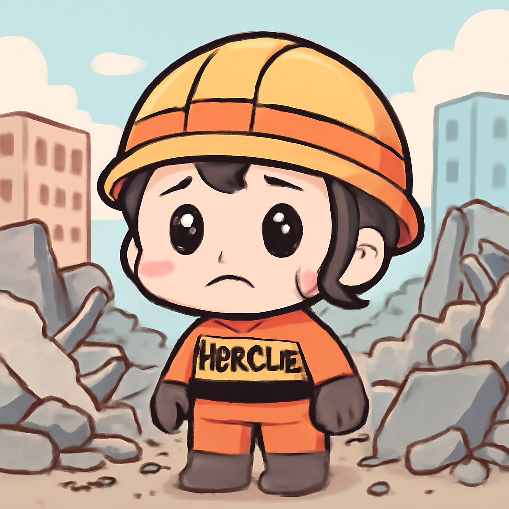
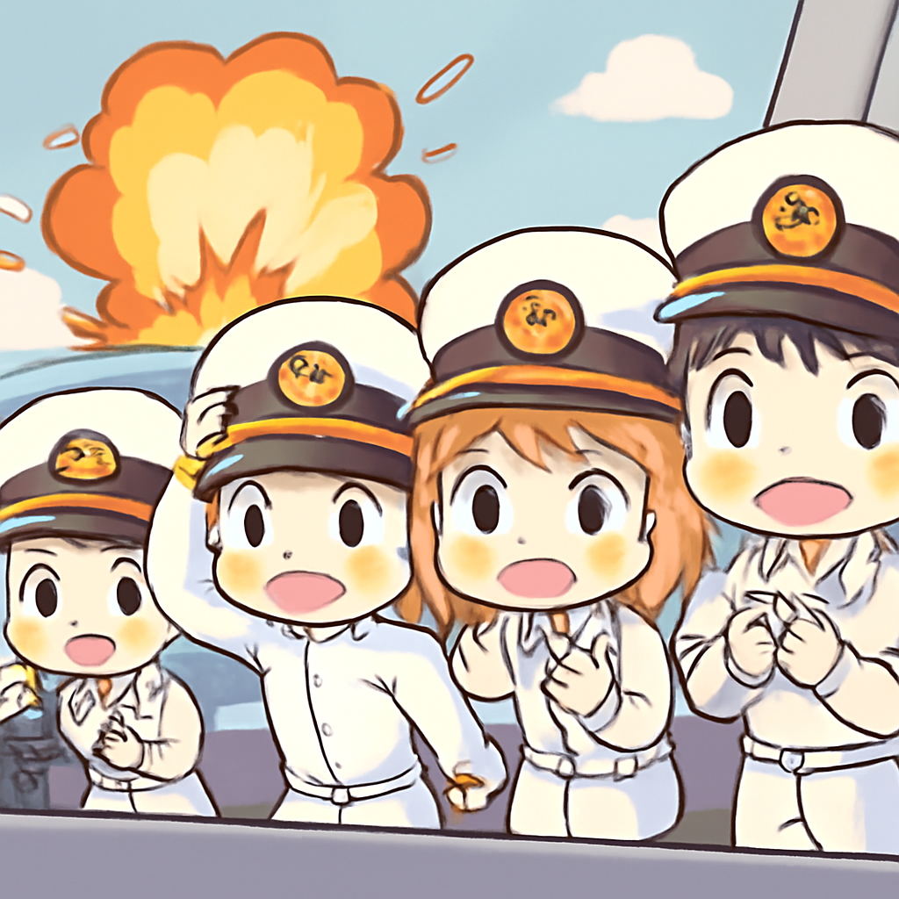

其一 · 委內瑞拉 · 地震重創首都
委內瑞拉發生7.2及7.5級地震，造成重大傷亡

在委內瑞拉，近日發生兩起7.2及7.5級地震，造成至少188人死亡，超過1500人受傷，許多人被困在瓦礫下。此次地震發生在馬杜羅政權不穩的時刻，讓本已脆弱的國家更雪上加霜。未來幾天，救援行動將成為焦點，希望能幫助更多的受害者。希望瓦礫下的幸運兒能像擺脫困境的超級英雄一樣重見光明。
🔗 原始新聞 ↗
2026-06-26 · 以古觀今，以笑抗愁
委內瑞拉發生7.2及7.5級地震，造成重大傷亡

在委內瑞拉，近日發生兩起7.2及7.5級地震，造成至少188人死亡，超過1500人受傷，許多人被困在瓦礫下。此次地震發生在馬杜羅政權不穩的時刻，讓本已脆弱的國家更雪上加霜。未來幾天，救援行動將成為焦點，希望能幫助更多的受害者。希望瓦礫下的幸運兒能像擺脫困境的超級英雄一樣重見光明。
🔗 原始新聞 ↗
法國發出警告，年輕人因熱浪面臨健康風險
最近，歐洲熱浪席捲法國，氣溫在德國部分地區可能突破40度，甚至年輕人也在死亡名單上。法國官員擔心，這波熱浪會影響到不少人的健康，尤其是年輕人。這提醒我們，夏天的沙灘要有遮陽傘，否則可能連海灘都變成燒烤場！
🔗 原始新聞 ↗
美國最高法院允許政府終止移民保護身份
美國最高法院最近裁定，特朗普政府可終止海地及敘利亞移民的保護身份，這意味著數十萬人可能面臨驅逐出境的風險。這一決定引發了廣泛關注，因為這些移民在美國生活多年，若被迫返回，將面臨許多挑戰。感覺就像是被告知，明天的早餐要自己做，卻發現冰箱空空如也！
🔗 原始新聞 ↗
伊朗在霍爾木茲海峽襲擊貨船，局勢緊張升高

在霍爾木茲海峽，伊朗對一艘貨船發動襲擊，造成國際航運的緊張局勢再次升高。此事件發生在美國試圖恢復該地區的航運安全之際，這讓各方都很緊張，尤其是那些依賴這條重要航道的國家。感覺就像是海上的一場貿易對決，誰都不想輸！
🔗 原始新聞 ↗
肯尼亞首都封鎖以阻止年輕人抗議
在肯尼亞，政府為了阻止年輕人抗議，封鎖了首都。這場抗議活動是對去年示威中數十人被殺的追悼，顯示了年輕人在政治上日益增長的影響力。看來，這樣的封鎖就像是試圖用膠帶封住一個噴泉，根本擋不住水流！
🔗 原始新聞 ↗